| id | y |
|---|---|
| 1 | 2.4 |
| 1 | 1.5 |
| 1 | 2.6 |
| 1 | 3.5 |
| 2 | 2.0 |
| 2 | 1.3 |
| 3 | 0.1 |
| 3 | 1.1 |
| 3 | 0.4 |
| \(\vdots\) | \(\vdots\) |
Scalability of Mixed Models for
Clustered and Longitudinal Data
May 13, 2025
Nicole Erler
Department of Data Science & Biostatistics
Julius Center for Health Sciences and Primary Care
Patients at the general nursing ward.
Repeated measurements (every 20 sec) of
Minimal data structure for a (linear) mixed model:
| id | y |
|---|---|
| 1 | 2.4 |
| 1 | 1.5 |
| 1 | 2.6 |
| 1 | 3.5 |
| 2 | 2.0 |
| 2 | 1.3 |
| 3 | 0.1 |
| 3 | 1.1 |
| 3 | 0.4 |
| \(\vdots\) | \(\vdots\) |
| id | y | setting |
|---|---|---|
| 1 | 2.4 | C |
| 1 | 1.5 | B |
| 1 | 2.6 | D |
| 1 | 3.5 | A |
| 2 | 2.0 | B |
| 2 | 1.3 | A |
| 3 | 0.1 | A |
| 3 | 1.1 | B |
| 3 | 0.4 | C |
| \(\vdots\) | \(\vdots\) | \(\vdots\) |
| id | y | time |
|---|---|---|
| 1 | 2.4 | 0.9 |
| 1 | 1.5 | 2.1 |
| 1 | 2.6 | 2.9 |
| 1 | 3.5 | 4.1 |
| 2 | 2.0 | 1.1 |
| 2 | 1.3 | 1.9 |
| 3 | 0.1 | 1.1 |
| 3 | 1.1 | 1.9 |
| 3 | 0.4 | 3.0 |
| \(\vdots\) | \(\vdots\) | \(\vdots\) |
| id | y | time | \(x_1\) | \(x_2\) | \(x_3\) |
|---|---|---|---|---|---|
| 1 | 2.4 | 0.9 | 0 | 1.4 | B |
| 1 | 1.5 | 2.1 | 0 | 1.4 | A |
| 1 | 2.6 | 2.9 | 0 | 1.4 | C |
| 1 | 3.5 | 4.1 | 0 | 1.4 | C |
| 2 | 2.0 | 1.1 | 1 | 1.4 | A |
| 2 | 1.3 | 1.9 | 1 | 1.4 | B |
| 3 | 0.1 | 1.1 | 1 | 0.4 | B |
| 3 | 1.1 | 1.9 | 1 | 0.4 | A |
| 3 | 0.4 | 3.0 | 1 | 0.4 | C |
| \(\vdots\) | \(\vdots\) | \(\vdots\) | \(\vdots\) | \(\vdots\) | \(\vdots\) |
For patient \(i\) at time \(t\):
\[ y_{i}(t) = \underset{\text{fixed effects}}{\underbrace{\mathbf x_{i}(t)^\top \boldsymbol{\beta}}} + \underset{\text{random effects}}{\underbrace{\mathbf z_{i}(t)^\top \mathbf{b_{i}}}} + \varepsilon_i(t) \]
\[\text{with}\quad \mathbf b_i \sim N(\mathbf 0, \mathbf D) \quad\text{and} \quad \varepsilon_i(t) \sim N(0, \sigma^2) \]
\(\mathbf x_i(t)^\top\): vector of covariates
\(\mathbf z_i(t)^\top\): vector of covariates with patient-specific effects
\(\boldsymbol\beta\): fixed (population) effects
\(\mathbf b_i\): random (patient-specific) effects
\(\varepsilon_i(t)\): residual error
For example,
\[y_i(t) = \underset{\text{fixed effects}}{\underbrace{\beta_0 + \beta_1 t}} + \underset{\text{random effects}}{\underbrace{b_{i0} + b_{i1} t}} + \varepsilon_i(t)\] with \[\mathbf b_i = \begin{bmatrix} b_{i0}\\b_{i1} \end{bmatrix} \sim N\left( \begin{bmatrix}0\\0\end{bmatrix}, \begin{bmatrix}d_{11} & d_{12}\\d_{21} & d_{22}\end{bmatrix}\right) \]
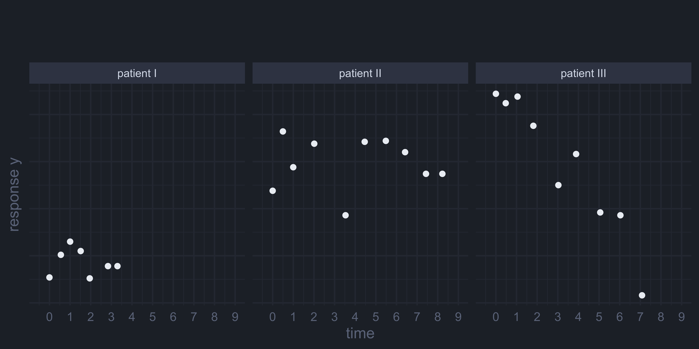
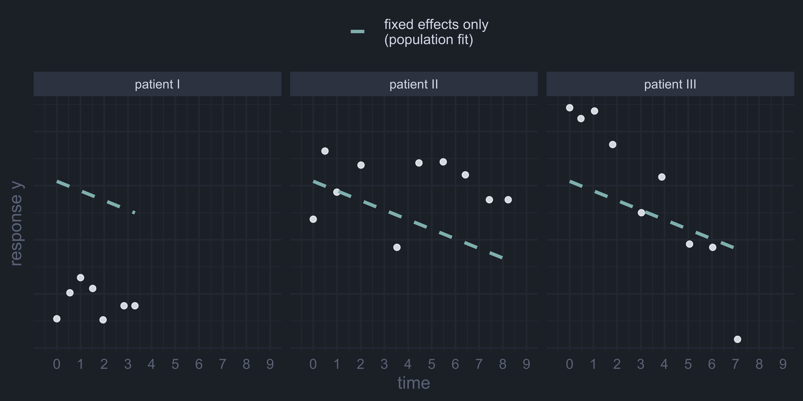
Example:
large longitudinal study
| id | y | time | \(x_1\) | \(x_2\) | \(x_3\) |
|---|---|---|---|---|---|
| 1 | 2.4 | 0.9 | 0 | 1.4 | B |
| 1 | 1.5 | 2.1 | 0 | 1.4 | A |
| 1 | 2.6 | 2.9 | 0 | 1.4 | C |
| 1 | 3.5 | 4.1 | 0 | 1.4 | C |
| 2 | 2.0 | 1.1 | 1 | 1.4 | A |
| 2 | 1.3 | 1.9 | 1 | 1.4 | B |
| \(\vdots\) | 0.1 | 1.1 | 1 | 0.4 | B |
| N | 1.1 | 1.9 | 1 | 0.4 | A |
| N | 0.4 | 3.0 | 1 | 0.4 | C |
Example:
| id | y | time | \(x_1\) | \(x_2\) | \(x_3\) |
|---|---|---|---|---|---|
| 1 | 2.4 | 0.9 | 0 | 1.4 | B |
| \(\vdots\) | 1.5 | 2.1 | 0 | 1.4 | A |
| 1 | 2.6 | 2.9 | 0 | 1.4 | C |
| 2 | 3.5 | 4.1 | 0 | 1.4 | C |
| \(\vdots\) | 2.0 | 1.1 | 1 | 1.4 | A |
| 2 | 1.3 | 1.9 | 1 | 1.4 | B |
| 3 | 0.1 | 1.1 | 1 | 0.4 | B |
| 3 | 1.1 | 1.9 | 1 | 0.4 | A |
| \(\vdots\) | 0.4 | 3.0 | 1 | 0.4 | C |
Example:
genetic markers
| id | y | time | \(x_1\) | \(x_2\) | \(x_3\) | \(x_4\) | ... | ... | ... | \(x_p\) |
|---|---|---|---|---|---|---|---|---|---|---|
| 1 | 2.4 | 0.9 | 0 | 1.4 | B | \(\ldots\) | \(\ldots\) | \(\ldots\) | \(\ldots\) | \(\vdots\) |
| 1 | 1.5 | 2.1 | 0 | 1.4 | A | \(\ldots\) | \(\ldots\) | \(\ldots\) | \(\ldots\) | \(\vdots\) |
| 1 | 2.6 | 2.9 | 0 | 1.4 | C | \(\ldots\) | \(\ldots\) | \(\ldots\) | \(\ldots\) | \(\vdots\) |
| 1 | 3.5 | 4.1 | 0 | 1.4 | C | \(\ldots\) | \(\ldots\) | \(\ldots\) | \(\ldots\) | \(\vdots\) |
| 2 | 2.0 | 1.1 | 1 | 1.4 | A | \(\ldots\) | \(\ldots\) | \(\ldots\) | \(\ldots\) | \(\vdots\) |
| 2 | 1.3 | 1.9 | 1 | 1.4 | B | \(\ldots\) | \(\ldots\) | \(\ldots\) | \(\ldots\) | \(\vdots\) |
| 3 | 0.1 | 1.1 | 1 | 0.4 | B | \(\ldots\) | \(\ldots\) | \(\ldots\) | \(\ldots\) | \(\vdots\) |
| 3 | 1.1 | 1.9 | 1 | 0.4 | A | \(\ldots\) | \(\ldots\) | \(\ldots\) | \(\ldots\) | \(\vdots\) |
Example:
Repeated imaging/omics data
| id | \(y_1\) | \(y_2\) | \(y_3\) | ... | ... | \(y_K\) | time | \(x_1\) | \(x_2\) | \(x_3\) |
|---|---|---|---|---|---|---|---|---|---|---|
| 1 | 2.4 | \(\ldots\) | \(\ldots\) | \(\ldots\) | \(\ldots\) | \(\ldots\) | 0.9 | 0 | 1.4 | B |
| 1 | 1.5 | \(\ldots\) | \(\ldots\) | \(\ldots\) | \(\ldots\) | \(\ldots\) | 2.1 | 0 | 1.4 | A |
| 1 | 2.6 | \(\ldots\) | \(\ldots\) | \(\ldots\) | \(\ldots\) | \(\ldots\) | 2.9 | 0 | 1.4 | C |
| 1 | 3.5 | \(\ldots\) | \(\ldots\) | \(\ldots\) | \(\ldots\) | \(\ldots\) | 4.1 | 0 | 1.4 | C |
| 2 | 2.0 | \(\ldots\) | \(\ldots\) | \(\ldots\) | \(\ldots\) | \(\ldots\) | 1.1 | 1 | 1.4 | A |
| 2 | 1.3 | \(\ldots\) | \(\ldots\) | \(\ldots\) | \(\ldots\) | \(\ldots\) | 1.9 | 1 | 1.4 | B |
| 3 | 0.1 | \(\ldots\) | \(\ldots\) | \(\ldots\) | \(\ldots\) | \(\ldots\) | 1.1 | 1 | 0.4 | B |
| 3 | 1.1 | \(\ldots\) | \(\ldots\) | \(\ldots\) | \(\ldots\) | \(\ldots\) | 1.9 | 1 | 0.4 | A |
| 3 | 0.4 | \(\ldots\) | \(\ldots\) | \(\ldots\) | \(\ldots\) | \(\ldots\) | 3.0 | 1 | 0.4 | C |
⇨ 9.3 million rows
⇨ Scenario 2 with additional challenges
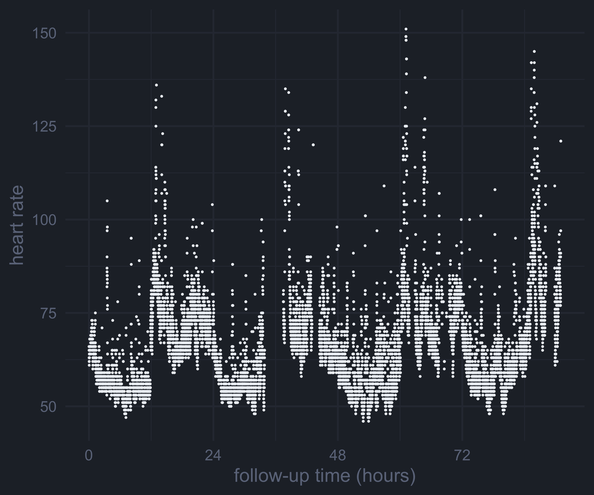
\[y_{ij} = \beta_0 + \beta_1 t_{ij} + b_{i0} + b_{i1} t_{ij} + \varepsilon_{ij}, \quad i = 1,\ldots, \bbox[#516682, 6px]{N}, \quad j = 1,\ldots, \bbox[#906E8A, 6px]{J}\]
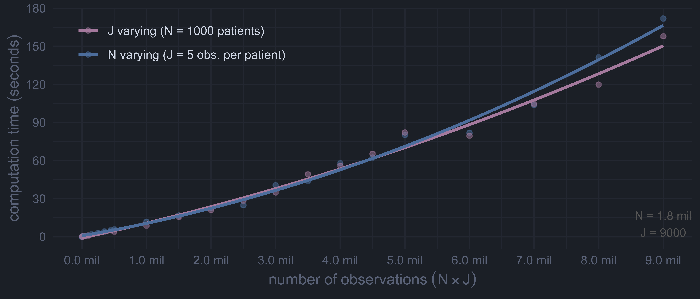
\[y_{ij} = \beta_0 + \beta_1 t_{ij} + b_{i0} + b_{i1} t_{ij} + \varepsilon_{ij}, \quad i = 1,\ldots, \bbox[#516682, 6px]{N}, \quad j = 1,\ldots, \bbox[#906E8A, 6px]{J}\]
data |
parameters |
||||
|---|---|---|---|---|---|
| N | J | \(\# \boldsymbol\beta\) | \(\# \sigma\) | \(\# \mathbf D\) | \(\# \mathbf b\) |
| 1 000 | 5 | 2 | 1 | 3 | 2 000 |
| 10 000 | 5 | 2 | 1 | 3 | 20 000 |
| 100 000 | 5 | 2 | 1 | 3 | 200 000 |
| 1.0 mil | 5 | 2 | 1 | 3 | 2.0 mil |
| 10.0 mil | 5 | 2 | 1 | 3 | 20.0 mil |
data |
parameters |
||||
|---|---|---|---|---|---|
| N | J | \(\# \boldsymbol\beta\) | \(\# \sigma\) | \(\# \mathbf D\) | \(\# \mathbf b\) |
| 1 000 | 5 | 2 | 1 | 3 | 2 000 |
| 1 000 | 10 | 2 | 1 | 3 | 2 000 |
| 1 000 | 100 | 2 | 1 | 3 | 2 000 |
| 1 000 | 1000 | 2 | 1 | 3 | 2 000 |
| 1 000 | 10000 | 2 | 1 | 3 | 2 000 |
Conditional formulation, given the unobserved random effects \(\mathbf b_i\):
\[\mathbf y_i \color{var(--nord10)}{\mid \mathbf b_i} \sim N\left(\mathbf X_i \boldsymbol\beta \color{var(--nord10)}{+ \mathbf Z_i\mathbf b_i},\; \sigma^2 \mathbf I\right)\] Integrating over the random effects… \[f(\mathbf y_i) = \color{var(--nord11)}{\int} f(\mathbf y_i \mid \mathbf b_i)\; f(\mathbf b_i) \; \color{var(--nord11)}{d\mathbf b_i}\] …results in the marginal model: \[\mathbf y_i \sim N(\mathbf X_i \boldsymbol\beta,\; \color{var(--nord14)}{\mathbf Z_i \mathbf D \mathbf Z_i^\top} + \sigma^2 \mathbf I)\]
fewer parameters to estimate integration
\[y_{ij} = \beta_0 + \bbox[#516682, 8px]{\beta_1 t_{ij} + \beta_2 x_{ij1} + \ldots + \beta_p x_{ijp}} + b_{i0} + b_{i1} t_{ij} + \varepsilon_{ij}, \quad {\scriptsize\begin{array}{l}i = 1,\ldots, 2000\\j = 1,\ldots, 10\end{array}}\]
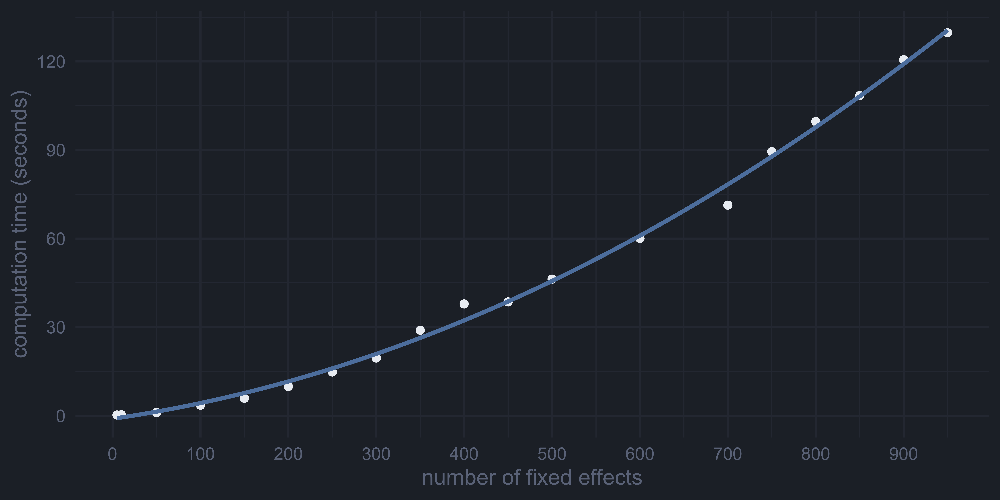\[y_{ij} = \beta_0 + \bbox[#516682, 8px]{\beta_1 t_{ij} + \beta_2 x_{ij1} + \ldots + \beta_p x_{ijp}} + b_{i0} + b_{i1} t_{ij} + \varepsilon_{ij}, \quad {\scriptsize\begin{array}{l}i = 1,\ldots, 2000\\j = 1,\ldots, 10\end{array}}\]
data |
parameters |
|||||
|---|---|---|---|---|---|---|
| N | J | # obs | \(\# \boldsymbol\beta\) | \(\# \sigma\) | \(\# \mathbf D\) | \(\# \mathbf b\) |
| 2 000 | 10 | 20 000 | 1 | 1 | 3 | 4 000 |
| 2 000 | 10 | 20 000 | 10 | 1 | 3 | 4 000 |
| 2 000 | 10 | 20 000 | 100 | 1 | 3 | 4 000 |
| 2 000 | 10 | 20 000 | 1000 | 1 | 3 | 4 000 |
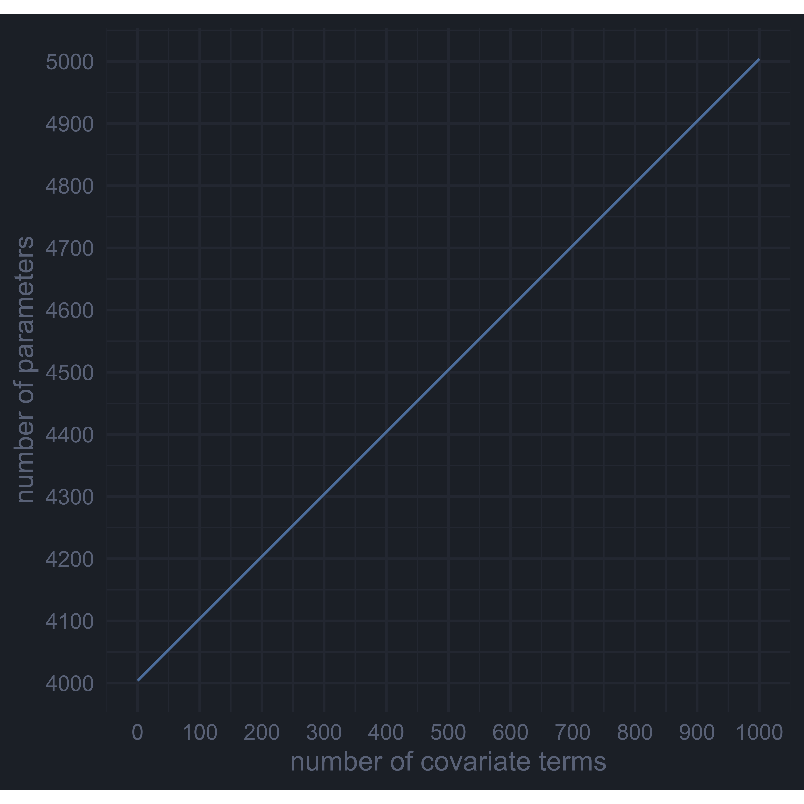
\[ \begin{array}{ccl} y_{ij\color{var(--nord11)}{1}} &=&\beta_{0\color{var(--nord11)}{1}} + \beta_{1\color{var(--nord11)}{1}} t_{ij\color{var(--nord11)}{1}} + b_{i0\color{var(--nord11)}{1}} + b_{i1\color{var(--nord11)}{1}} t_{ij\color{var(--nord11)}{1}} + \varepsilon_{ij\color{var(--nord11)}{1}}\\ \vdots & \vdots & \vdots\\ y_{ij\color{var(--nord11)}{K}} &=&\beta_{0\color{var(--nord11)}{K}} + \beta_{1\color{var(--nord11)}{K}} t_{ij\color{var(--nord11)}{K}} + b_{i0\color{var(--nord11)}{K}} + b_{i1\color{var(--nord11)}{K}} t_{ij\color{var(--nord11)}{K}} + \varepsilon_{ij\color{var(--nord11)}{K}} \end{array} \quad {\scriptsize\begin{array}{l}i = 1,\ldots, N\\j = 1,\ldots, J\\\bbox[#BF616A, 2pt]{k = 1, \ldots, K}\end{array}} \]
with
\[\mathbf b_i = \begin{pmatrix} b_{i0\color{var(--nord11)}{1}} \\ b_{i1\color{var(--nord11)}{1}}\\ \vdots \\ b_{i0\color{var(--nord11)}{K}} \\ b_{i1\color{var(--nord11)}{K}} \end{pmatrix} \sim N(\mathbf 0, \mathbf D) \qquad \text{and}\qquad \varepsilon_{ij\color{var(--nord11)}{k}} \sim N(0, \sigma_\color{var(--nord11)}{k}^2 \mathbf I)\]
For the intercept & slope model:
data |
parameters |
|||||
|---|---|---|---|---|---|---|
| N | J | K | \(\# \boldsymbol\beta\) | \(\# \sigma\) | \(\# \mathbf D\) | \(\# \mathbf b\) |
| 1 000 | 10 000 | 1 | 2 | 1 | 3 | 2 000 |
| 1 000 | 10 000 | 2 | 4 | 2 | 10 | 4 000 |
| 1 000 | 10 000 | 3 | 6 | 3 | 21 | 6 000 |
| 1 000 | 10 000 | 4 | 8 | 4 | 36 | 8 000 |
| 1 000 | 10 000 | 5 | 10 | 5 | 55 | 10 000 |
| 1 000 | 10 000 | 10 | 20 | 10 | 210 | 20 000 |
| 1 000 | 10 000 | 100 | 200 | 100 | 20 100 | 200 000 |
| 1 000 | 10 000 | 1000 | 2000 | 1000 | 2.0 mil | 2.0 mil |
| 1 000 | 10 000 | 5000 | 10000 | 5000 | 50.0 mil | 10.0 mil |
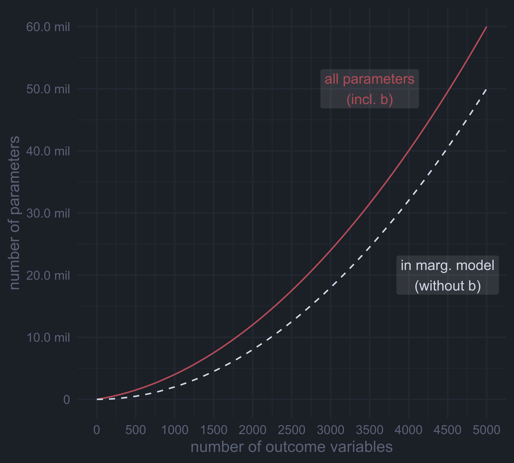
\[y_{ij} = \beta_0 + \beta_1 t_{ij} + \ldots + \beta_p t_{ij}^p + \bbox[#906E8A, 8px]{b_{i0} + b_{i1} t_{ij} + \ldots + b_{ip} t_{ij}^p} + \varepsilon_{ij}, \quad {\scriptsize\begin{array}{l}i = 1,\ldots, 50\\j = 1,\ldots, 100\end{array}}\]
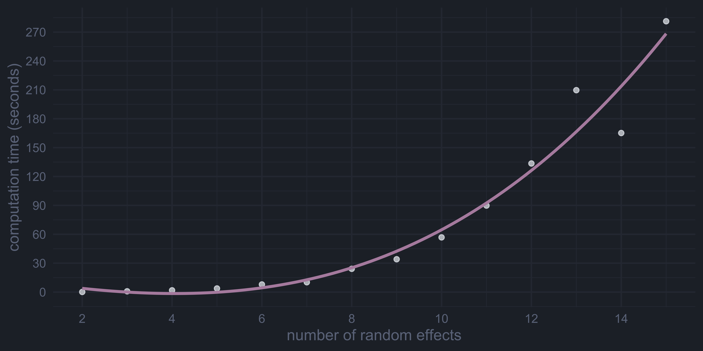\[y_{ij} = \beta_0 + \beta_1 t_{ij} + \ldots + \beta_p t_{ij}^p + \bbox[#906E8A, 8px]{b_{i0} + b_{i1} t_{ij} + \ldots b_{ip} t_{ij}^p} + \varepsilon_{ij}, \quad {\scriptsize\begin{array}{l}i = 1,\ldots, N\\j = 1,\ldots, J\end{array}}\]
data |
parameters |
|||||
|---|---|---|---|---|---|---|
| N | J | # rd. effect terms | \(\# \boldsymbol\beta\) | \(\# \sigma\) | \(\# \mathbf D\) | \(\# \mathbf b\) |
| 50 | 100 | 1 | 1 | 1 | 1 | 50 |
| 50 | 100 | 2 | 2 | 1 | 3 | 100 |
| 50 | 100 | 3 | 3 | 1 | 6 | 150 |
| 50 | 100 | 4 | 4 | 1 | 10 | 200 |
| 50 | 100 | 5 | 5 | 1 | 15 | 250 |
| 50 | 100 | 10 | 10 | 1 | 55 | 500 |
| 50 | 100 | 50 | 50 | 1 | 1275 | 2500 |
| 50 | 100 | 100 | 100 | 1 | 5050 | 5000 |
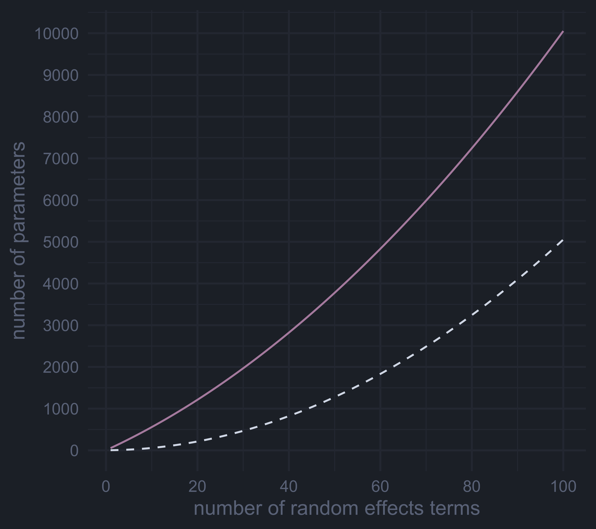
Scenario 1 & 2: Many clusters/patients or many repeated measurements
Scenario 3: Many covariates
Scenario 4: Many outcome variables
Alternatives to the full multivariate model:
Interaction with an indicator variable:
\[
\begin{align} y_{ij} = & (\beta_0 + b_{i01}) + (\beta_1 + b_{i11}) t_{ij} \\
& + (\beta_2 + b_{i02})\ I(\color{var(--nord11)}{k = 2}) +
(\beta_3 + b_{i12})\ I(\color{var(--nord11)}{k = 2})t_{ij}\\
& + \ldots +\\
& + (\beta_{p-1} + b_{i0K})\ I(\color{var(--nord11)}{k = K}) +
(\beta_p + b_{i1K})\ I(\color{var(--nord11)}{k = K}) t_{ij}\\
& + \varepsilon_{ij}
\end{align}
\]
⇨ specify weights to accommodate \(\sigma_\color{var(--nord11)}{1}, \ldots, \sigma_\color{var(--nord11)}{K}\)
| id | \(\color{var(--nord11)}{k}\) | time |
|---|---|---|
| 1 | y1 | 0 |
| \(\vdots\) | y1 | \(\vdots\) |
| 1 | y1 | 9.3 |
| 1 | y2 | 0 |
| \(\vdots\) | y2 | \(\vdots\) |
| 1 | y2 | 7.8 |
| 2 | y1 | 0 |
| \(\vdots\) | y1 | \(\vdots\) |
standard LMM software
works for unbalanced data
only for outcomes of the same type
Fit models for all pairs of outcomes: \[(y_1, y_2), (y_1, y_3), (y_2, y_3), \ldots, (y_{K-1}, y_K)\]
average parameters estimated in multiple models e.g., \(\beta_{11}\) is estimated in \((y_1, y_2)\), \((y_1, y_3)\), …
Pairwise models can be run in parallel.
Doesn’t work in joint models.
Scenario 5: Random Effect Terms
data |
parameters |
|||||||
|---|---|---|---|---|---|---|---|---|
| N | J | K | # obs | rd | \(\# \boldsymbol\beta\) | \(\# \sigma\) | \(\# \mathbf D\) | \(\# \mathbf b\) |
| 1 000 | 10000 | 5 | 50.0 mil | 10 | 50 | 5 | 1 275 | 50 000 |
| 1 000 | 10000 | 6 | 60.0 mil | 10 | 60 | 6 | 1 830 | 60 000 |
Empirical Bayes estimate:
\[\mathbf{\hat b}_i = \widehat{\mathbf D} \mathbf Z_i^\top \left(\mathbf Z_i \mathbf{\widehat D} \mathbf Z_i^\top + \sigma^2 \mathbf I\right)^{-1} (\mathbf y_i - \mathbf x_i^\top \boldsymbol{\hat\beta})\]
⇨ \(\mathbf Z_i \mathbf{\widehat D} \mathbf Z_i^\top\) is \(10\ 000 \times 10\ 000\) (or larger)
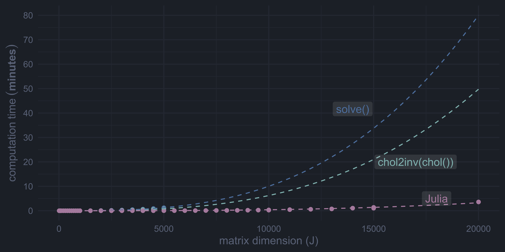
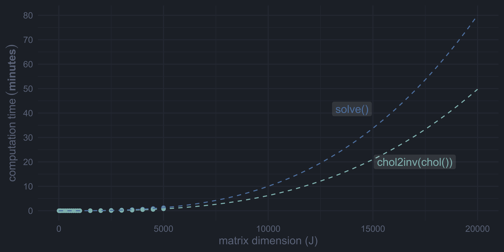
\[\begin{align*} y_{i}(t) = & \beta_0 + \color{var(--nord15)}{b_{i0}} + (\beta_1 + \color{var(--nord15}{b_{i1}})\; t \;+ \\ & (\beta_2 + \color{var(--nord15)}{b_{i2}}) \sin\left(2\pi \frac{t\bmod 24}{24}\right) + (\beta_3 + \color{var(--nord15)}{b_{i3}}) \cos\left(2\pi \frac{t\bmod 24}{24}\right) +\\ & (\beta_4 + \color{var(--nord15)}{b_{i4}}) \sin\left(2\pi \frac{t\bmod 24}{12}\right) + (\beta_5 + \color{var(--nord15)}{b_{i5}}) \cos\left(2\pi \frac{t\bmod 24}{12}\right) +\\ & (\beta_6 + \color{var(--nord15)}{b_{i6}}) \;t\sin\left(2\pi \frac{t\bmod 24}{24}\right) + (\beta_7 + \color{var(--nord15)}{b_{i7}}) \;t\cos\left(2\pi \frac{t\bmod 24}{24}\right) +\\ & (\beta_8 + \color{var(--nord15)}{b_{i8}}) \;t\sin\left(2\pi \frac{t\bmod 24}{12}\right) + (\beta_9 + \color{var(--nord15)}{b_{i9}}) \;t\cos\left(2\pi \frac{t\bmod 24}{12}\right) +\\ & \varepsilon_i(t) \end{align*}\]